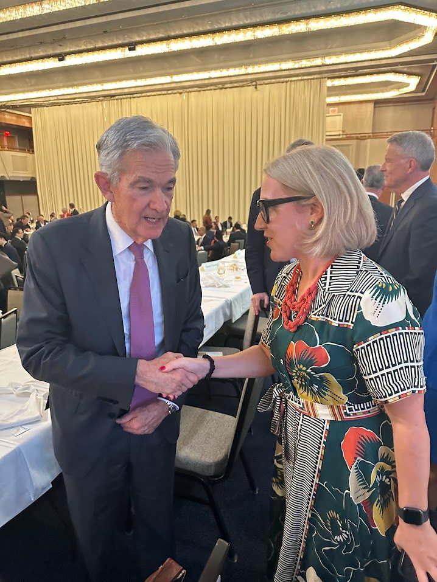
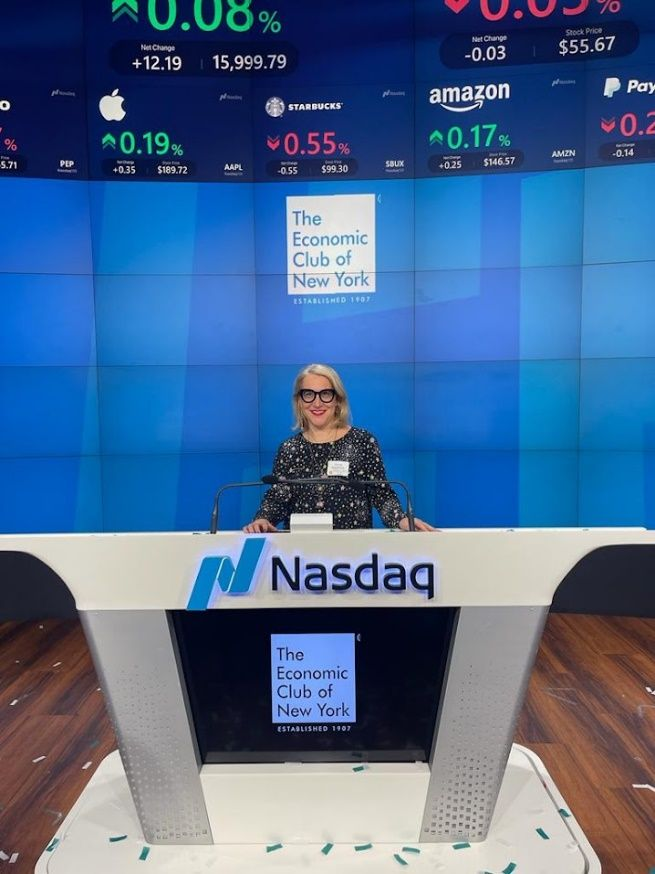

AboutLaura
I am a researcher, advisor, educator, and writer whose work explores the moral and institutional foundations of economic life.
What is economic life for?
I work across finance, climate and ecological transition, theology and ethics, and the history of political and economic thought.
I am especially interested in the ways institutions shape what we consider possible: the forms of value we measure, the risks we recognize, the futures we finance, and the responsibilities we owe one another and the living world.
These questions inform my work across research, advisory, teaching, and public conversation. Through Sistematica Research & Advisory, I collaborate with organizations working on sustainable and values-aligned finance, investment strategy and systems-level questions. Through Moral Revolution, I write and host conversations about economics, ethics, theology, and social transformation. I am also a partner in Universe Partners, a climate-resilience venture fund; a board member of Arketa, a degrowth think tank; and an adjunct professor at Columbia University’s School of International and Public Affairs.
Across these roles, I seek to connect rigorous, data driven analysis with a wider moral imagination, taking complexity seriously while keeping in view the question of what economic life is for.
Current roles
Financial Times · MSCI · S&P Dow Jones Indices · Environmental Finance · Americas Society/Council of the Americas · National Association of Business Economists · SRI360 · Columbia University · Cornell University · Duke University


collaborationsGet in touch →